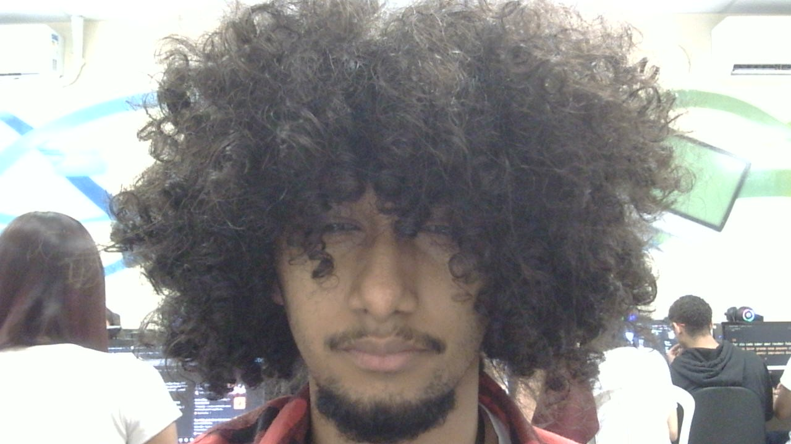
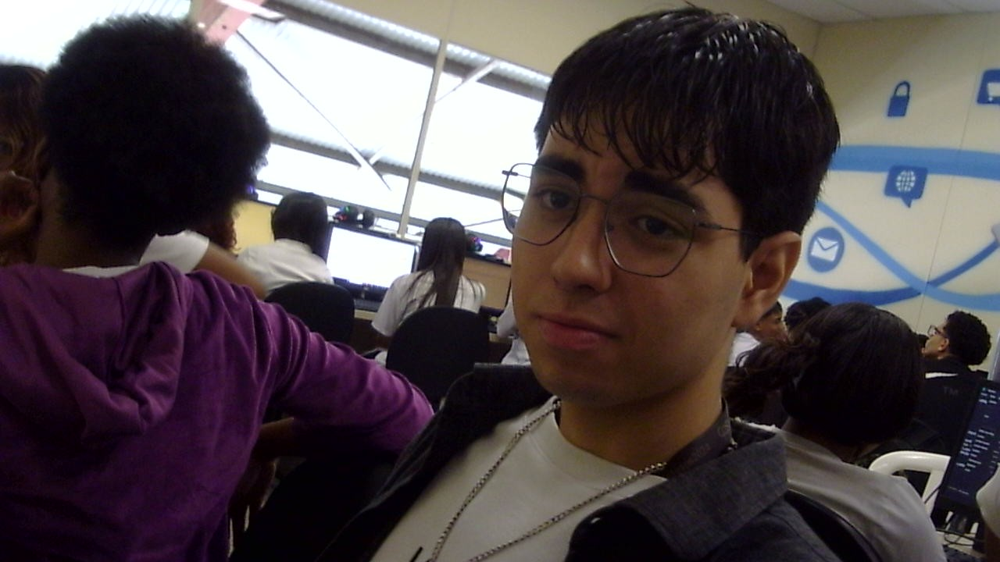
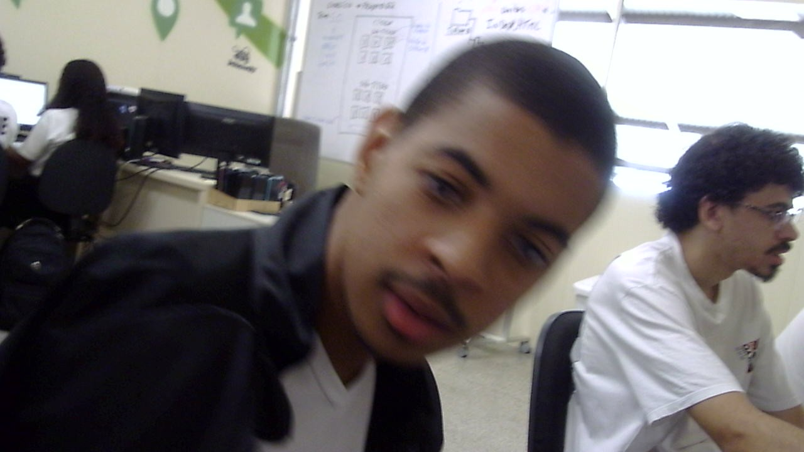
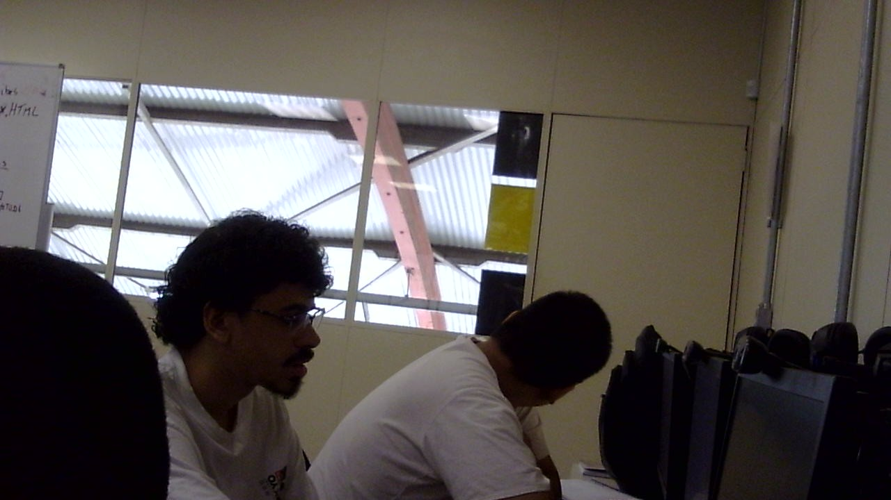
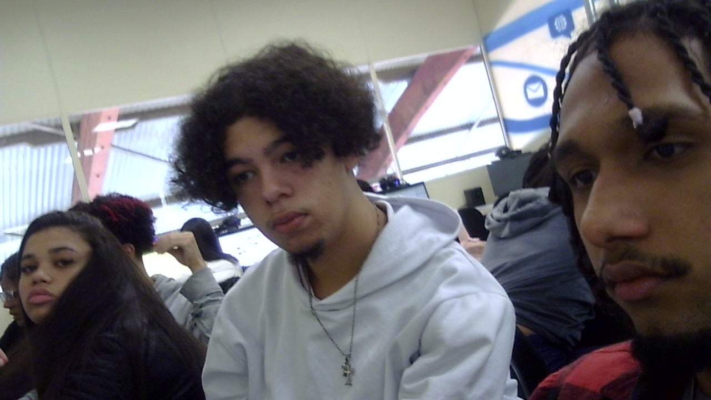

- Capacidade de inspirar e motivar a equipe
- Comunicar com clareza e assertividade
- Tomar decisões estratégicas, mesmo sob pressão.
LUKAS-LIDER

Slugterra é habitada por criaturas mágicas: as Lesmas. Elas funcionam como munição para armas superpoderosas chamadas Blasters. Existem lesmas de todos os formatos e tamanhos, encontradas em diferentes cavernas, e algumas são mais raras que outras, às vezes até únicas. As Lesmas podem se transformar a uma certa velocidade, que é de 200 km/h.







